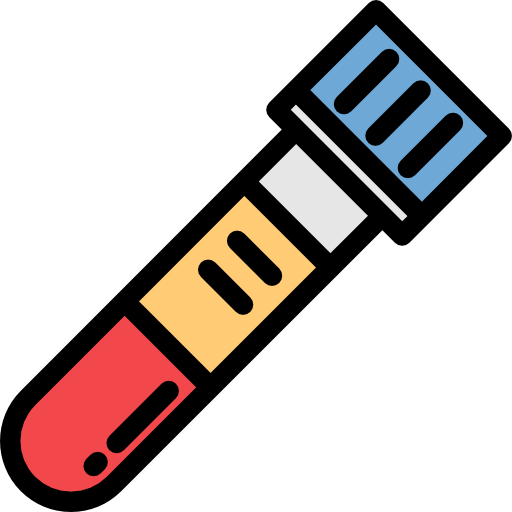
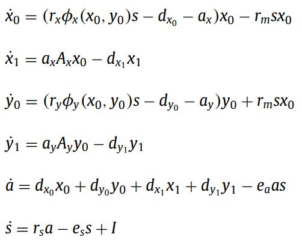
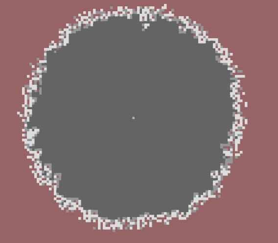

Communicating science with p5.js
How interactive simulations and creative coding can make the complex relatable
Lightning talk for Processing Community Day 31st of January 2020
The challenges of communicating science


Science influences decisions about the world.
Scientists must be able to communicate their work!
My perspective
Ph.D.-student in mathematics at Roskilde University.
Collaboration with clinicians from Roskilde Hospital.
 
A big challenge: I'm not a doctor.
A bigger challenge: The doctors are not me.
How I have used p5.js
Two examples of interactive simulations.
Based on complicated mathematical models.
- Growth of a cancer tumor.
- The spread of diseases.
Purpose: Post on mathematical blog.
Purpose: For educating high school students.
Mathematical model of cancer growth



Interactive simulation of cancer growth
Modelling the spread of infectious diseases
Diseases that spread in a population of people.
Classic example: The SIR model (Susceptible, Infected and Recovered,).
Used to predict how fast diseases like e.g. Ebola, Measles or Corona-virus spread.
How do you communicate it to someone who hasn't spent a whole career working with it.
Interactive simulation of disease-spread
Conclusion
Science communication is fundamental for society.
Creative coding can a way to make science more relatable.
Important to have tools that make visualization and interactivity easy (e.g. Processing and p5.js)
With my limited experience with p5.js, I have still made something useful for communicating science.